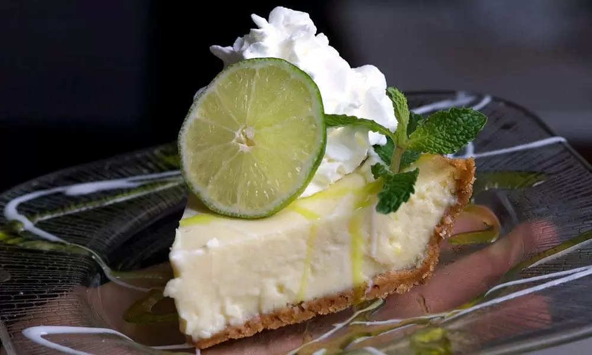

Best foods in Florida
Most people say that the best food the world has to offer is in Italy. Oh yeah, pizza and noodles, are really impressive. Others favor the French. Mmm, snails—thanks, but no thanks. Well, all those people are way wrong! The best food ever created in the history of culture is the food we have right here in the great state of Florida. The thing about Florida food, though, is that just like American food, very few dishes are really "our own." Instead, Florida brings together a multitude of cultural influences and cuisines from different regions. We have Latin influences, rich seafood delicacies, and southern comfort food (yeah, that's right. I said it. Florida is part of the South. Has been since 1845, so deal with it.). With such a long history and so many different cooking cultures contributing to the food industry in St. Augustine, visitors on can enjoy all the dishes for which Florida is famous.
|  |